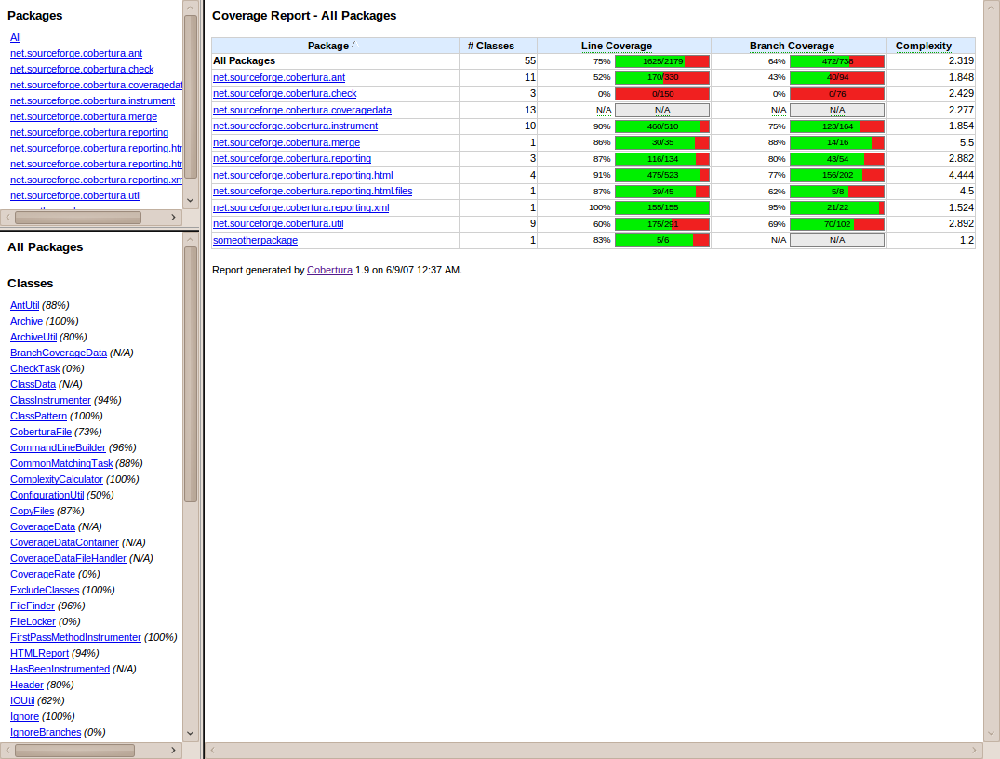
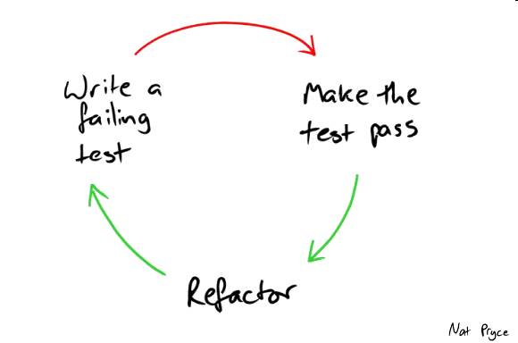

我所经历的单元测试的三个境界
最开始测试也就是代码写完后运行一下看有没有什么问题。那个时候不会认真的去想要测试什么，因为问题会自己找上门来。:P
写个 main
就可以跑起来看看打印出来是不是自己期望的。不出意外的话，一般是各种异常堆栈会最先出现。囧
rz
其实我一个人写来自己用的，有没有单元测试，怎么实现单元测试，真的没有那么重要。
为证明而测试
有一天，我得写些代码给其他的程序员用，为了不招来鄙视的眼神，被迫得装逼写了个单元测试用例:
public class XxxHelper {
public String magic(String s) {...}
}
public class XxxHelperTest {
@Test
public void testMagic() {
XxxHelper h = new XxxHelper();
assertEquals(h.magic("hello"), "world");
}
}当有人叫嚣着告诉我代码有 bug 的时候，我会把测试用例给他看，证明代码没有 bug。
cobertura 它是个拉高测试逼格的利器，只要执行
mvn clean cobertura:cobertura，它便会在运行单元测试后生成一个 HTML 的覆盖率的报告，非常直观的展现出测试用例覆盖哪些代码行。通过它，我可以清楚的了解到测试用例是否足够，有没有覆盖到我最关心，最担心的那部分逻辑。与此同时，我对代码质量的信心也来源于此。

测试覆盖率要达到多少才算好呢？
这其实不是一个好问题，容易误导我们盲目追求某个数字而忘记做这件事情的初衷。
数值只是一种程度的参考，关键要看哪些被标红的代码行，斟酌一下：
- 有没有必要去追加更多的测试用例去覆盖到？
- 这儿也许是过度设计 (或实现) 的产物，超出了目前交付的目标范围，是删掉，还是创建一个新的分支留待以后再用？
为重构而测试
需求唯一不变的就是变
研发是个持续迭代的过程，需求的演化驱动着代码的变迁，其单元测试也是一样。

然后实际情况可能会是:
- 代码各种改…
- 跑测试，WTF，失败了？！
- 注释掉，嗯，这个世界从此安静啦，嘿嘿嘿~~~
躺枪了吧朋友，不好意思，这纯属蓄意！
什么？你从来不跑测试… 囧 rz
如果你还是个希望达到这个境界的人，那你需要明白，单元测试是你提交代码前最后的防线，它一旦失败就意味你代码打破之前的设计约定。
我们时常扼腕叹息某个老系统不能动，一动谁也不知道会出什么问题，此时一定会有个不知趣的人跳出来问怎么没有测试用例呢？
为文档而测试
平庸的程序员至少有两件事情最不情愿做：
- 如果说写测试算一个的话，那么
- 写文档必须是另一个
“怎么连个文档都没有？”
这是我们在使用别人提供的代码时最常抱怨的一句话了。
试想一下，要是测试代码就是文档的话，不是一举两得的好事吗？
public class TraderSteps {
private Stock stock;
@Given("a stock of symbol $symbol and a threshold of $threshold")
public void aStock(String symbol, double threshold) {
stock = new Stock(symbol, threshold);
}
@When("the stock is traded at $price")
public void theStockIsTradedAt(double price) {
stock.tradeAt(price);
}
@Then("the alert status should be $status")
public void theAlertStatusShouldBe(String status) {
ensureThat(stock.getStatus().name(), equalTo(status));
}
}很赞，对不对？
那是不是意味着下面的测试就不算上是”文档”呢？
@RunWith(SpringJUnit4ClassRunner.class)
@TestPropertySource("classpath:default.properties")
@ContextConfiguration(classes = {SecureDataSourceConfiguration.class, PropertySourcesPlaceholderConfigurer.class})
public class DefaultDataSourceTest {
@Autowired
DataSource secure;
@Test
public void should_inject_secure_data_sources() throws Exception {
assertThat(secure, is(notNullValue()));
final DruidDataSource dds = (DruidDataSource) this.secure;
assertThat(dds.getMaxActive(), is(5));
assertThat(dds.getRemoveAbandonedTimeoutMillis(), is(300000L));
}
}然后并不是这样的，细心的人会发现：
- 类名
DefaultDataSourceTest，说明了测试场景； - 方法名
should_inject_secure_data_sources，说明代码的预期行为。
测试代码甚至还可以是一份直观的使用教程，如：
@RunWith(SpringJUnit4ClassRunner.class)
@TestPropertySource("classpath:multiple.properties")
@ContextConfiguration(classes = {MultipleDataSourcesTest.Config.class, SecureDataSourceConfiguration.class, PropertySourcesPlaceholderConfigurer.class})
public class MultipleDataSourcesTest {
@Autowired
Map<String, DataSource> sources;
@Test
public void should_inject_two_data_sources() throws Exception { ... }
@Configuration
public static class Config extends SecureDataSourceConfiguration {
@Bean
@ConfigurationProperties("ds.m1")
FactoryBean<DataSource> m1(JdbcUrlTemplate jdbcUrl) {
return createSecureDataSourceFactoryBean("wac_m1", jdbcUrl);
}
@Bean
@ConfigurationProperties("ds.m2")
FactoryBean<DataSource> m2(JdbcUrlTemplate jdbcUrl) {
return createSecureDataSourceFactoryBean("wac_m2", jdbcUrl);
}
}
}看到这里，我想各位应该明白了，写出有”文档”价值的测试代码，首先不难，其次它带来的益处是你以前无法想象：
- 有了这样的测试代码，你再也不用把时间浪费在 QQ 的沟通上；
- 有了这样的测试代码，Code Review 对你来说都是件轻松愉快的事情；
- 有了这样的测试代码，你是不是都有了提 Merge Request 的冲动呢？